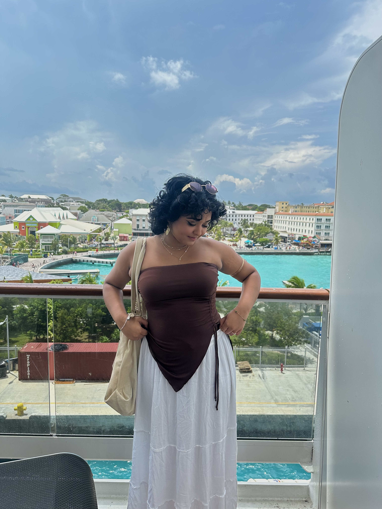

Hi!
I’m Avanthika Vuppala and I’m currently pursuing Aerospace Engineering at Rutgers University.
What draws me to this field is the challenge of designing systems that don’t just look good on paper,
but actually perform under real-world conditions where precision and reliability matter.
I’m interested in how small design decisions can affect overall system performance and
how different components must work together seamlessly.
I’m mostly interested in propulsion systems and how they can be optimized for efficiency and performance. I also have a strong interest in advanced materials and how they can be used to create lighter, stronger, and more durable components. Additionally, I’m intrigued by the integration of robotics in aerospace applications, such as autonomous drones and robotic arms for satellite servicing.
I’m working toward a career where I can contribute to the development of efficient and reliable aerospace technologies and am seeking opportunities to apply and grow my skills.
Outside of engineering, I enjoy crocheting, painting, drawing, and trying new cuisines. I also design my own nails with 3D art, paint with oil pastels, and build small 3D structures just for fun. I’ve always been drawn to creating things, and that creativity shapes the way I approach both my hobbies and my career.